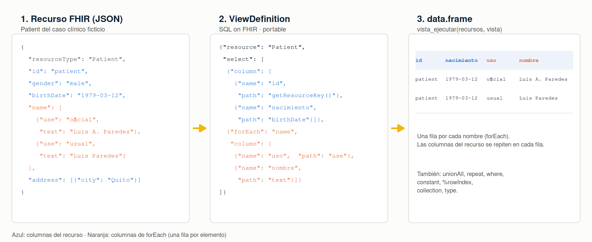
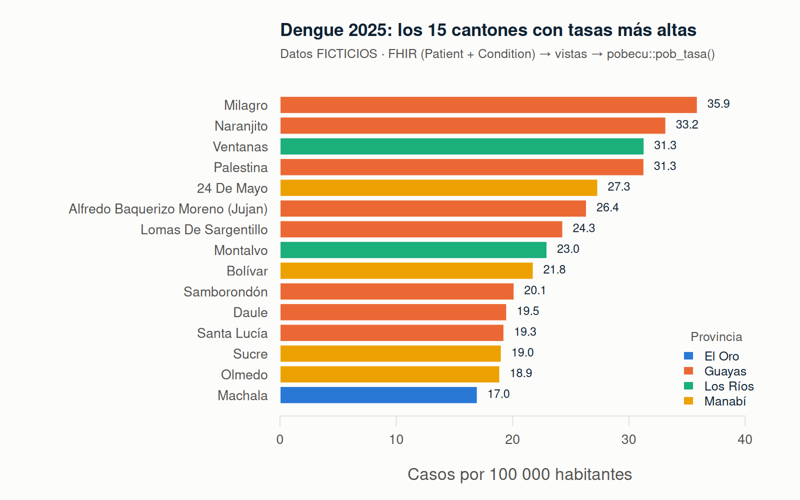
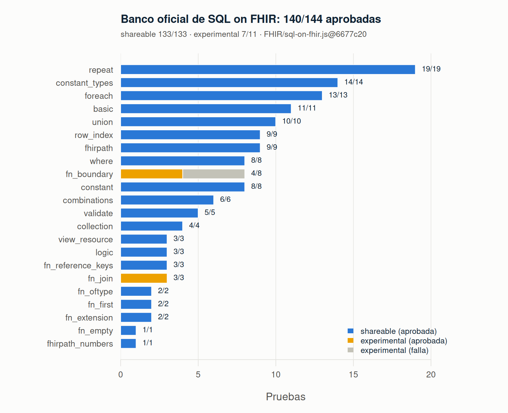
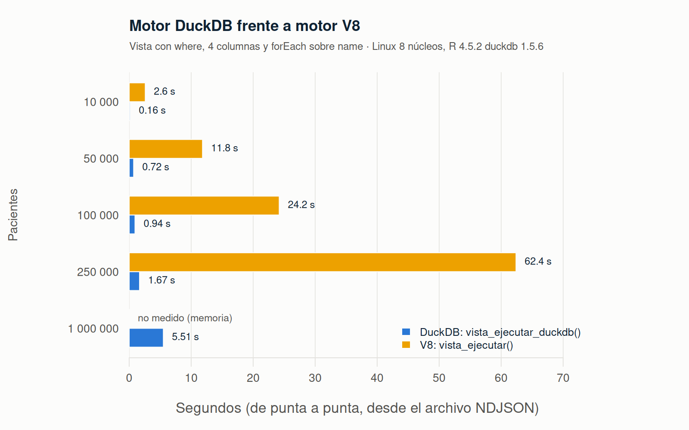

De recursos FHIR a tablas reproducibles en R.
fhirviews consulta servidores HL7 FHIR R4 y transforma sus recursos en data.frame mediante SQL on FHIR y FHIRPath. Define una vista una vez, guárdala como ViewDefinition y reutilízala sobre archivos locales, respuestas del servidor o exportaciones poblacionales.
Está pensado para análisis clínico, investigación, vigilancia epidemiológica y docencia desde R. Incluye autenticación SMART on FHIR, vistas para salud pública y procesamiento NDJSON por bloques, sin instalar Java ni Spark.
Documentación · Referencia · Novedades de 0.5.0 · Reportar un problema

Versión 0.5.0 · distribución en GitHub. Procesamiento por bloques, recuperación de exportaciones con validación de contenido y mejoras de privacidad. El motor SQL de DuckDB sigue siendo experimental. El paquete todavía no se ha enviado a CRAN.
Contenido
- Qué puedes hacer
- Instalación
- Inicio rápido: de FHIR a una tabla
- Elegir cómo procesar los datos
- Consultar un servidor FHIR
- Autenticación y exportación masiva
- Procesar archivos por bloques
- Trabajar con DuckDB
- Vistas de salud pública y terminologías
- Validación y privacidad
- Conformidad y pruebas
- Rendimiento
- Alcance y límites
- Guías y referencia
- Contribuir, citar y licencia
Qué puedes hacer
| Necesidad | Herramientas |
|---|---|
| Convertir JSON, Bundles o recursos de R en tablas |
vista_crear(), vista_ejecutar()
|
| Consultar FHIR con paginación automática |
fhir_conectar(), fhir_buscar(), fhir_leer()
|
| Acceder a servidores protegidos |
fhir_auth_cliente(), fhir_auth_backend(), fhir_auth_interactiva()
|
| Descargar una población mediante Bulk Data |
fhir_exportar(), fhir_exportar_estado()
|
| Recorrer NDJSON y gzip sin reunir toda la salida en memoria | vista_ejecutar_lotes() |
| Ejecutar una vista traducible a SQL sobre NDJSON o Parquet |
vista_ejecutar_duckdb() — experimental |
| Consultar varias tablas con SQL |
vista_duckdb() — vistas evaluadas con V8 y guardadas en una transacción |
| Partir de vistas para salud pública |
vista_catalogo(), vista_plantilla()
|
| Definir cohortes con códigos de un ValueSet |
tx_expandir(), vista_con_valueset()
|
| Escribir y validar recursos en el servidor |
fhir_crear(), fhir_actualizar(), fhir_borrar(), fhir_validar()
|
Un ViewDefinition describe las columnas, filtros y colecciones que se quieren extraer mediante expresiones FHIRPath. Guardar esa definición junto al análisis hace explícitas las decisiones de transformación y facilita su revisión.
flowchart LR
A["Archivos JSON / NDJSON / gzip"] --> V["ViewDefinition + FHIRPath"]
B["Servidor FHIR R4"] --> C["Cliente y exportación Bulk Data"]
C --> V
V --> D["data.frame en R"]
V --> E["Una tabla por bloque"]
V --> F["DuckDB SQL · experimental"]
D --> G["Análisis, indicadores y tableros"]
E --> G
F --> GInstalación
El cliente y el motor V8 requieren R ≥ 4.1.0. Instala desde GitHub:
install.packages("pak") # una sola vez
pak::pak("f-slg/fhirviews")La rama principal recibe cambios. Para reproducir un análisis, instala un commit concreto y conserva sessionInfo() junto con la vista y los datos:
pak::pak("f-slg/fhirviews@<SHA-del-commit>")FHIRPath se ejecuta con fhirpath.js, incluido en el paquete, a través de V8. En sistemas con binarios disponibles, la instalación de V8 no requiere pasos adicionales. Si compilas desde código fuente, consulta sus instrucciones de instalación.
Instala las dependencias opcionales según tu flujo:
| Funcionalidad | Paquetes adicionales |
|---|---|
| Tablas y motor SQL de DuckDB |
DBI, duckdb ≥ 1.3.0; la versión actual de DuckDB requiere R ≥ 4.2 |
| Consultas diferidas sobre DuckDB | Los anteriores, más dplyr y dbplyr
|
| SMART Backend Services, con JWT firmado |
jose, openssl
|
| Inicio de sesión interactivo, con PKCE | httpuv |
| Addins y panel Connections de RStudio | rstudioapi |
# Ejemplo: habilitar DuckDB
install.packages(c("DBI", "duckdb"))Inicio rápido: de FHIR a una tabla
Este ejemplo usa datos ficticios incluidos en el paquete. Una vez instalado, funciona sin conexión y no requiere dependencias opcionales.
library(fhirviews)
archivo <- system.file("extdata", "caso_clinico.ndjson", package = "fhirviews")
signos <- vista_crear(
"Observation",
c(fecha = "effective.ofType(dateTime)",
medida = "code.text",
valor = "value.ofType(Quantity).value",
unidad = "value.ofType(Quantity).unit"),
where = "value.ofType(Quantity).exists()"
)
tabla <- vista_ejecutar(archivo, signos)
tabla[, c("id", "medida", "valor", "unidad")]
#> id medida valor unidad
#> 1 obs-temp Temperatura corporal 38.40 °C
#> 2 obs-fr Frecuencia respiratoria 20.00 respiraciones/min
#> 3 obs-fc Frecuencia cardíaca 102.00 latidos/min
#> 4 obs-tumor Tamaño del tumor 3.50 cm
#> 5 obs-bsa Superficie corporal 1.77 m2La vista selecciona Observation, filtra las que tienen valueQuantity y extrae cuatro columnas. vista_crear() añade la clave del recurso en id. También puedes empezar con una vista del catálogo:
tabla_catalogo <- vista_ejecutar(archivo, vista_plantilla("signos_vitales"))
head(tabla_catalogo)
# Guardar la definición en JSON para versionarla o compartirla
json_vista <- vista_json(signos)
writeLines(json_vista, "signos-vitales.json")
vista_reutilizable <- vista_leer("signos-vitales.json")Elegir cómo procesar los datos
| Situación | Función | Dónde queda el resultado |
|---|---|---|
| Los recursos y la tabla caben en memoria | vista_ejecutar() |
Un data.frame completo |
| Quieres leer NDJSON o gzip por bloques con FHIRPath en V8 | vista_ejecutar_lotes() |
En la función procesar(tabla, bloque) que tú defines |
| Tienes NDJSON o Parquet y una vista compatible con el traductor SQL | vista_ejecutar_duckdb() |
En R, una tabla de DuckDB o una consulta diferida |
| Quieres consultar juntas varias vistas evaluadas con V8 | vista_duckdb() |
Tablas en una conexión DBI |
El procesamiento por bloques limita la entrada que se lee en cada paso. La memoria total depende también de las filas generadas por la vista y de lo que conserve tu función. En DuckDB, usa tabla o diferido = TRUE para evitar traer toda la salida a R.
Consultar un servidor FHIR
El siguiente ejemplo usa un servidor público de pruebas y requiere conexión:
con <- fhir_conectar("https://hapi.fhir.org/baseR4")
pacientes <- fhir_buscar(
con, "Patient", `_count` = 20, max_paginas = 2, progreso = FALSE
)
vista_pacientes <- vista_crear(
"Patient", c(sexo = "gender", nacimiento = "birthDate")
)
vista_ejecutar(pacientes, vista_pacientes)La búsqueda sigue los enlaces next del servidor. _count solicita el tamaño de página; max_paginas limita las páginas descargadas. La disponibilidad y los resultados de los servidores públicos pueden variar.
Usa fhir_capacidades(con) para consultar los recursos y operaciones que admite el servidor, fhir_leer() para leer un recurso concreto y fhir_everything() para solicitar $everything. En RStudio, el panel Connections permite explorar recursos y los addins ejecutan peticiones FHIR o vistas desde el editor.
Autenticación y exportación masiva
Para SMART Backend Services, registra previamente el cliente y su clave pública en el servidor de autorización. La clave privada debe ser RSA de al menos 2048 bits o EC P-384.
# Sustituye la URL, el identificador y la clave por los de tu entorno
con <- fhir_conectar(
"https://fhir.hospital.ejemplo/r4",
autenticacion = fhir_auth_backend(
"tablero-vigilancia", "~/.claves/privada.pem",
alcances = "system/*.rs", kid = "clave-2026"
)
)
# Iniciar el trabajo y conservar su referencia antes de descargar
exp <- fhir_exportar(
con, "paciente", tipos = c("Patient", "Condition"),
carpeta = "exportacion", esperar = FALSE
)
exp <- fhir_exportar_estado(exp, esperar = TRUE)El cliente obtiene y renueva el token. La exportación respeta Retry-After y verifica el NDJSON recibido antes de registrar cada archivo como completo: contenido JSON, tipo de recurso y conteo cuando el manifiesto lo incluye. También admite archivos gzip.
Si una descarga se interrumpe, vuelve a ejecutar exp <- fhir_exportar_estado(exp, esperar = TRUE) conservando el objeto y la carpeta. Los archivos completos del mismo trabajo se reutilizan si su checksum coincide; los ausentes o alterados se descargan de nuevo. Cada archivo incompleto se reinicia desde el comienzo. La recuperación depende de que el servidor conserve el trabajo y sus URL de descarga.
También están disponibles client credentials con secreto e inicio de sesión interactivo con PKCE. Consulta la guía de autenticación y Bulk Data.
Procesar archivos por bloques
Este ejemplo completo recorre el archivo incluido y muestra un resumen por bloque. La función de procesamiento puede escribir cada tabla en una base de datos o generar agregados:
archivo <- system.file("extdata", "caso_clinico.ndjson", package = "fhirviews")
vista <- vista_crear("Observation", c(medida = "code.text"))
totales <- vista_ejecutar_lotes(
archivo, vista,
procesar = function(tabla, bloque) {
cat("Bloque", bloque, ":", nrow(tabla), "filas\n")
},
tamano_lote = 20
)
totalesPara una exportación propia, sustituye archivo por sus rutas NDJSON o .ndjson.gz. El retorno contiene bloques, recursos y filas; los resultados de la función procesar() se descartan.
Si procesar() falla, la ejecución se detiene y sus escrituras anteriores permanecen. Declara tipos de columna con type en el ViewDefinition y comprueba el esquema antes de insertar en una tabla existente. Los tipos inferidos pueden variar entre bloques; los valores incompatibles con un tipo explícito generan un aviso y pueden conservarse sin convertir.
Trabajar con DuckDB
El motor SQL experimental traduce un ViewDefinition a una consulta de DuckDB. Es útil cuando la entrada es grande y la vista puede expresarse en el subconjunto FHIRPath que admite el traductor:
archivo <- system.file("extdata", "caso_clinico.ndjson", package = "fhirviews")
vista <- vista_crear("Patient", c(sexo = "gender"))
pacientes_sql <- vista_ejecutar_duckdb(archivo, vista)
vista_sql(vista) # inspeccionar la consulta generadaPrueba primero la vista con vista_ejecutar() sobre una muestra representativa. Las expresiones que el traductor no admite producen un error. Para NDJSON o Parquet propios, usa sus rutas en lugar de archivo.
El motor SQL necesita la extensión json de DuckDB y puede descargarla la primera vez. En entornos sin internet, prepara esa extensión con la misma versión de DuckDB y comprueba LOAD json antes de ejecutar el proceso. La construcción estándar de las viñetas evita esa descarga; sus ejemplos SQL se habilitan explícitamente con FHIRVIEWS_VINETAS_DUCKDB=true.
Para guardar varias vistas evaluadas con el motor V8 y consultarlas con SQL, usa vista_duckdb(). Esta función escribe las tablas en una transacción; no utiliza el traductor experimental.
Vistas de salud pública y terminologías
El catálogo incluye siete vistas: pacientes, diagnósticos, encuentros, inmunizaciones, medicamentos, signos vitales y notificación obligatoria. Puedes inspeccionarlas y adaptar sus constantes:
vista_catalogo()[, c("nombre", "recurso")]
archivo_dengue <- system.file(
"extdata", "dengue_2025.ndjson.gz", package = "fhirviews"
)
casos <- vista_ejecutar(archivo_dengue, vista_plantilla("notificacion_obligatoria"))Con un servidor de terminología, tx_expandir() obtiene los códigos de un ValueSet, tx_buscar_codigo() consulta $lookup y tx_validar_codigo() invoca $validate-code. vista_con_valueset() incorpora los códigos expandidos a la vista para que su ejecución posterior no dependa de la red.
Para convertir casos en indicadores territoriales, consulta el ejemplo de tasas por cantón con FHIR y pobecu.

Validación y privacidad
vista_validar() revisa una definición de vista. fhir_validar() pide al servidor que valide un recurso mediante $validate; el alcance de esa validación depende de los perfiles y capacidades del servidor.
Desde 0.5.0, el atributo valido distingue tres resultados:
| Valor | Significado |
|---|---|
TRUE |
El servidor devuelve un OperationOutcome completo, sin errores ni problemas fatales, en una respuesta HTTP satisfactoria |
FALSE |
El OperationOutcome contiene errores o problemas fatales en una respuesta HTTP satisfactoria |
NA |
La operación falla por HTTP o la respuesta no permite determinar la validez |
# Requiere una conexión y un servidor que admita $validate
resultado <- fhir_validar(con, list(resourceType = "Patient", gender = "female"))
if (!isTRUE(attr(resultado, "valido"))) {
stop("El recurso no tiene una validación positiva del servidor.")
}El estado HTTP queda disponible en attr(resultado, "estado"). Una validación positiva no certifica la calidad clínica de los datos.
Los errores HTTP omiten por defecto el contenido del servidor, que puede contener información de pacientes. También se ocultan los valores sensibles de la consulta, incluido _id. Para depuración controlada:
options(fhirviews.mostrar_detalles = TRUE) # contenido del servidor en errores
options(fhirviews.mostrar_consulta = TRUE) # valores completos de la consulta
# Volver al comportamiento predeterminado
options(fhirviews.mostrar_detalles = FALSE, fhirviews.mostrar_consulta = FALSE)Los detalles estructurados siguen disponibles en error$outcome al capturar un error HTTP. Estas opciones no anonimizan recursos, rutas URL ni archivos de salida: el acceso y almacenamiento de datos clínicos corresponden al entorno que ejecuta el análisis. Los tokens se mantienen en memoria salvo que se solicite explícitamente caché en disco con cache_disco = TRUE.
Conformidad y pruebas
El paquete incluye el banco oficial de SQL on FHIR. Los dos motores superan 133/133 pruebas del perfil shareable y 7/11 experimentales del banco incluido. Las cuatro pendientes corresponden a lowBoundary() y highBoundary() y a diferencias de precisión o zona horaria. La conformidad se refiere a ese banco y no certifica un sistema clínico.
vista_conformidad() # motor V8
vista_conformidad(motor = "duckdb") # requiere DuckDB y su extensión json
CI comprueba el paquete en Windows, macOS y Linux, además de R-devel y R 4.1. En R 4.1 y R-devel se comprueban el cliente y V8. Los tres sistemas con R release incluyen DuckDB y sus pruebas SQL. Las pruebas HTTP usan respuestas simuladas. La integración de escritura se habilita por separado contra un servidor de pruebas propio:
FHIRVIEWS_SERVIDOR_ESCRITURA=http://localhost:8080/fhir \
Rscript -e 'devtools::test(filter = "servidor")'Ese servidor debe permitir escritura; algunas pruebas requieren terminología y Bulk Data. La suite omite operaciones que el servidor no admite. Consulta tests/testthat/test-servidor.R para preparar un HAPI aislado.
Rendimiento
La siguiente medición compara ambos motores con pacientes sintéticos y una vista que incluye where, cuatro columnas y forEach sobre name.

| Pacientes | Filas | Motor V8 | Motor DuckDB | Veces más rápido |
|---|---|---|---|---|
| 10 000 | 17 824 | 2,3 s | 0,22 s | 11 |
| 50 000 | 89 128 | 11,0 s | 0,92 s | 12 |
| 100 000 | 178 062 | 23,2 s | 1,18 s | 20 |
| 250 000 | 444 912 | 58,9 s | 1,56 s | 38 |
| 1 000 000 | 1 780 958 | — | 5,8 s | — |
Tiempo de punta a punta, desde el archivo NDJSON hasta el data.frame, con pacientes sintéticos y una vista con where, cuatro columnas y forEach sobre name (data-raw/motor-duckdb.R; Linux, 8 núcleos, R 4.5.2, duckdb 1.5.6).
Son resultados de ese equipo y esa vista, no una garantía de rendimiento. La expansión de colecciones, el tamaño del resultado, el disco y la memoria pueden cambiar el comportamiento. El script reproducible está en data-raw/motor-duckdb.R.
Alcance y límites
- FHIR R4 y JSON. El modelo incluido es R4; no se declara compatibilidad con R5 ni con recursos XML.
-
FHIRPath. La evaluación ocurre en V8. La resolución remota con
resolve()está desactivada; las consultas de terminología se realizan con las funcionestx_*antes de ejecutar la vista. -
Precisión y fechas. Los números de JSON pierden los ceros decimales finales al leerse. Las fechas se conservan como texto ISO 8601 para admitir valores parciales como
2025o2025-03. -
Memoria y esquema.
vista_ejecutar()reúne el resultado en memoria; el procesamiento por bloques requiere que tu función gestione la salida. Los avisos de conversión de tipos deben revisarse antes de persistir datos. - DuckDB experimental. El traductor SQL cubre un subconjunto de FHIRPath. Contrasta tus vistas con V8 antes de llevarlas a gran escala.
-
Capacidades del servidor. SMART,
$validate, terminología y$exportdependen de la configuración y los permisos del servidor conectado.
Las prioridades de desarrollo incluyen estabilizar el motor DuckDB, mejorar la precisión decimal y ampliar las operaciones de búsqueda y terminología. Las propuestas y su seguimiento están en GitHub Issues.
Guías y referencia
| Guía | Contenido |
|---|---|
| Primeros pasos | Cliente, recursos y primeras vistas con el caso clínico |
| ViewDefinition en detalle | Columnas, colecciones, filtros, tipos y SQL |
| Servidores y grandes volúmenes | SMART, exportación masiva y DuckDB |
| Tasas por cantón | Indicadores con FHIR y población de Ecuador |
| Arquitectura | Motores, evaluación por lotes y seguridad |
| Referencia de funciones | Firmas, argumentos y ejemplos de la API |
Proyectos relacionados: pobecu para población de Ecuador, geoecu para límites territoriales y aprende-fhir para docencia con un caso clínico ficticio.
Contribuir, citar y licencia
Para dudas de uso, participa en Discussions. Para errores o propuestas, abre un issue con un ejemplo mínimo reproducible y datos ficticios. Consulta la guía de contribución y el código de conducta.
Para citar el paquete:
citation("fhirviews")Autor y mantenedor: Ronald Fabricio Salas Guerrero. Licencia MIT. Las licencias y atribuciones del código y los datos incluidos se detallan en inst/COPYRIGHTS.
fhirviews es un proyecto independiente. FHIR® y HL7® son marcas registradas de Health Level Seven International; su uso no implica respaldo institucional. Todos los datos de ejemplo incluidos son ficticios.